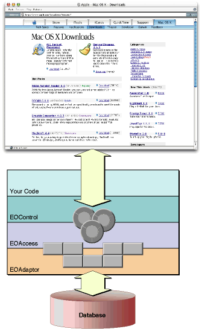

| PATH |

Enterprise Objects is a suite of tools and code that allow you to create database-based applications. It is divided into several layers concerned with connecting to the database, converting result sets to enterprise objects, and ensuring that the state of the enterprise objects and the database are always synchronized. WebObjects adds another layer on top of Enterprise Objects; it is used to manipulate enterprise objects and display their data.
The following components, listed from the WebObjects layer down to the database, make up the Enterprise Objects architecture.
Figure 9-1 illustrates the approach that Enterprise Objects takes when interacting with a database.
Figure 9-1 The Enterprise Objects approach
You're familiar with manipulating Java objects using WebObjects components. Now, we'll start at the top with those objects and follow the interactions in the Enterprise Objects layer down to the database.
WebObjects provides the user interface for your enterprise objects. The WebObjects dynamic elements use an interface called EOKeyValueCoding to communicate with Java objects. All enterprise objects implement this interface.
An enterprise object is first and foremost a Java object like any other. It has instance variables and methods that act on them. However, it has the additional characteristic of being linked to a database structure by Enterprise Objects. Enterprise objects differ from other objects in that they are a representation of data that is stored in a database.
Each enterprise object typically represents one row from a database. When the properties (instance variables) of an enterprise object are changed and you instruct Enterprise Objects to save those changes, they are propagated through the layers down to the database.
An enterprise object can be an instance of the default EOGenericRecord class or of a custom Java class. EOGenericRecord provides all the default behavior of propagating changes to the database but does not allow the addition of custom logic. You use an EOGenericRecord when you don't need special behavior beyond that of basic representation of database values. You define a custom class when you wish to have more control over the properties and behavior of your data. Custom classes are defined as subclasses of EOGenericRecord so they inherit the default enterprise object behavior.
Enterprise objects, whether represented by EOGenericRecord or a custom class, are defined in a model created with the EOModeler application. The model, which is explained in greater detail in "The Model", specifies which columns in your database are associated with a particular property for each entity of your data model.
EOGenericRecords use the key-value coding mechanism defined in the EOKeyValueCoding interface to store their data. Each key is named for the database column it represents. When an enterprise object is instantiated from a row in the database, the value of its keys are obtained from their corresponding columns in the row.
The control layer is the principal domain of enterprise objects. It provides an insulated layer dedicated to maintaining the state of enterprise objects. Data flows out and upward to WebObjects components, and can be propagated downward toward the database. The EOControl layer is responsible for
Uniquing is used by Enterprise Objects to ensure that an enterprise object is not duplicated in the control layer. This mechanism uses an entity's primary key to determine the identity and uniqueness of each enterprise object in the object graph. It is important that enterprise objects not be duplicated in the object graph to maintain data integrity and use memory efficiently. For example, if two books have the same author, the control layer ensures that they both refer to the same Author object in memory. Uniquing is one of the responsibilities of the object graph.
An object graph is a collection of all the currently active enterprise objects for a particular external store. You can think of it as a snapshot of the current state of the database reflected in Java objects.
An object graph can also represent a potential state of the database. If your components make changes to some enterprise objects, those changes are stored in an object graph until they are committed to the database. Keeping track of these changes is the responsibility of the EOEditingContext class.
Each editing context object manages one object graph, keeping track of any changed properties of each of its enterprise objects. It also preserves their original values so changes can be undone.
Typically, a set of changes reflecting user input and selection is accumulated in the object graph of an editing context. At some point, the changes are either committed to the database for permanent storage, or they are undone, reverting the object graph to its original state. If the changes are committed, the editing context notifies the EOAccess layer of the changes made to enterprise objects, so that it can make the necessary changes to the database.
You can create editing contexts in your application. However, by default, each session has an editing context associated with it. This default editing context, accessible by all components, is usually sufficient.
The access layer provides access to the database through a standardized protocol. Every piece of data crossing between the access layer is in the form of an enterprise object. This level of abstraction makes the job of the control layer much simpler, since it can rely on the format of the data.
The access layer is divided into two parts: the adaptor level and the database level.
The adaptor level is where Enterprise Objects translates data from a database and packages it as key-value dictionaries. Currently, the JDBC (Java Database Connectivity) standard is used for database access, but the adaptor level makes it possible to allow access to other database systems, such as legacy databases, simply by adding an adaptor. This allows a developer to remain unconcerned with the specific database to be used while writing code.
The database level is the level beyond which no details are known about the specific database underneath. Enterprise objects are created from raw data from the database, and when data is needed by the control layer, the database layer performs the needed fetches from the database. Similarly, the database layer handles the actual updates to the database when an editing context is saved.
© 2001 Apple Computer, Inc.